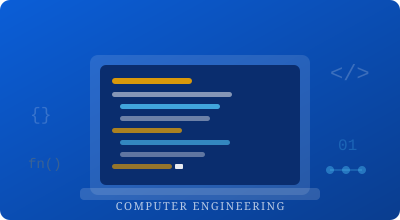

Our Schools & Departments
The Higher Institute is structured into major schools that deliver specialised programs to match modern industry needs. Each school offers a focused curriculum designed for real-world impact.

School of Computer Engineering
Offers programs in software engineering, networks & cybersecurity, embedded systems, AI, and digital innovation — preparing students for high-demand tech careers in a rapidly evolving industry.
School of Management
Trains future leaders in business administration, HR, project management, marketing, and entrepreneurship. Focus on practice-based learning and real industry cases to build confident decision-makers.
School of Finance
Specialises in accounting, banking & finance, taxation, financial technology (FinTech), and investment management — shaping financially skilled professionals ready for the global economy.